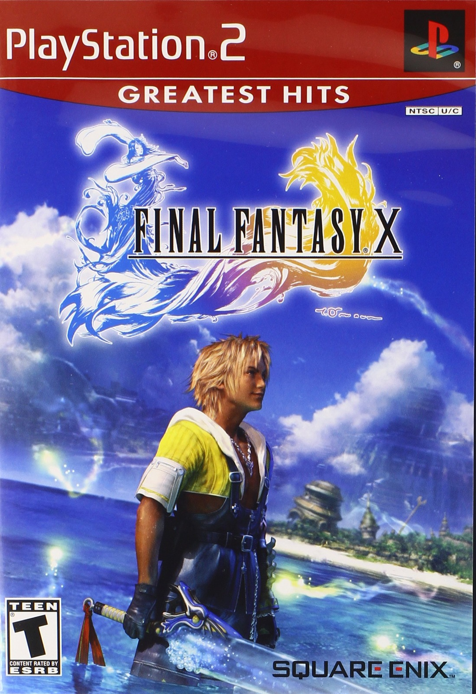

Sinopse
Final Fantasy X é o décimo título da aclamada série de RPGs da Square Enix. O jogo segue Tidus, um jovem jogador de blitzball que é transportado para o mundo de Spira, onde encontra Yuna, uma jovem sacerdotisa destinada a salvar seu mundo de uma criatura destrutiva chamada Sin. O jogo combina elementos de exploração, batalhas por turnos e uma trama profunda sobre sacrifícios, destino e redenção.
Final Fantasy X foi o primeiro título da série a apresentar dublagem em inglês e gráficos em 3D de alta qualidade para a época, além do inovador sistema de batalha "Conditional Turn-Based Battle" (CTB), que modificou a fórmula de combate tradicional da série.
Características Principais
- História emocionalmente envolvente com personagens memoráveis
- Combate por turnos com o inovador sistema CTB (Conditional Turn-Based Battle)
- Exploração em um mundo expansivo, com várias cidades e áreas abertas
- Gráficos impressionantes e animações de alta qualidade para a época
- Dublagem de voz em inglês e músicas marcantes compostas por Nobuo Uematsu
- Minijogos como Blitzball e o sistema de evolução de personagens "Sphere Grid"
Imagens Adicionais